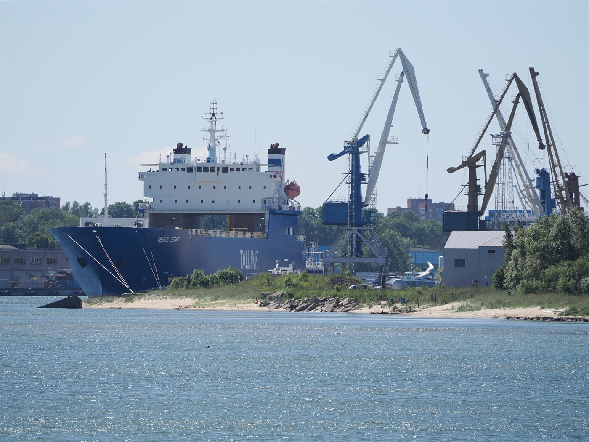
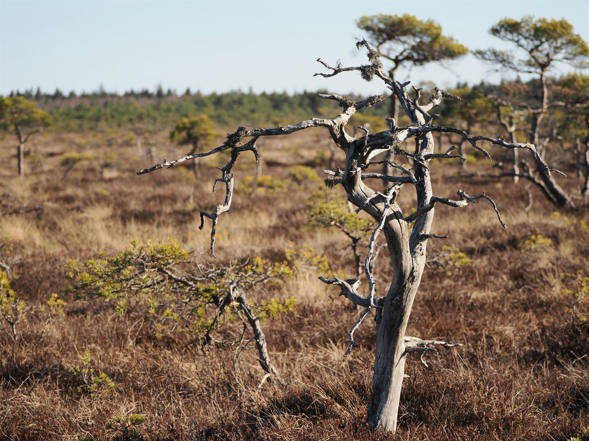

Inimene · intervjuu
„Auto ei ole lihtsalt asi. See on mälestus.“
Kolmkümmend aastat garaažis. Küsisime ühelt autohuviliselt, miks kulub tal nädalavahetuseti rohkem aega mootori kallal kui perega.
Kaisa Kask · 8 min
11
2026
Asjad, mida tasub
märgata ja lugeda.
Kaaslugu · linnaelu
Tallinn ärkab enne päikest ja jääb magama pärast viimast trammi. Käisime väljas kolmel ööl järjest, et aru saada, kes need inimesed on, kes linna igavesti ärkvel hoiavad.
Lugu: Mari Maasikas · Fotod: Jaan Kuusk · 12 min

Kell kolm öösel on linn hoopis teine koht. Mitte hullem ega parem, lihtsalt teine: tänavad on laiemad, helid kostavad kaugemale ja iga vastutulija tundub teadvat midagi, mida sina ei tea.
Meie esimene peatus oli öine pagariäri, kus kolm inimest rullivad tainast nii, nagu oleks kell pool kaheksa hommikul. „See on lihtsalt harjumus,“ ütles perenaine ja ulatas meile kaks sooja saia. „Keegi peab ju hommikuks leiva tegema.“
Edasi viis tee läbi vanalinna, kus iga teine maja tundus magavat. Ainult ühes aknas põles tuli. Seal elas pensionil raamatukoguhoidja, kes ladus põrandale raamatuid ja rääkis, kuidas linn on neljakümne aasta jooksul muutunud valjemaks, kiiremaks ja veidi üksildasemaks.
„Öö ei ole päeva vastand. Öö on lihtsalt teine viis samas linnas elada.“
Viimane peatus oli bussijaam. Kell pool kuus hakkasid saabuma esimesed bussid, kohvik avas uksed ja keegi ostis kolm kohvi korraga. Öö oli läbi nii vaikselt, et seda ei märganudki.
Kui päike tõusis, olid tänavad jälle täis kiirustavaid inimesi. Keegi ei vaadanud üles. Aga me teadsime nüüd, et linn ei ole vahepeal maganud — ta lihtsalt ootas, kuni me tagasi tuleme.
Inimene · intervjuu
Kolmkümmend aastat garaažis. Küsisime ühelt autohuviliselt, miks kulub tal nädalavahetuseti rohkem aega mootori kallal kui perega.
Kaisa Kask · 8 min

Raamatud
Mõned raamatud tuleb jätta pooleli. Võib-olla mitte igavikuliselt, aga piisavalt kauaks, et nende juurde hiljem tagasi tulla.
Tõnu Tamm · 5 min
Muusika · nimekiri
Mitte ükski neist ei ole uus. Aga sügis ei olegi uute asjade jaoks.
Kõige huvitavamad lood ei ole need, mis juhtuvad suurel laval, vaid need, mis juhtuvad kõrvaltänavas, kui keegi parasjagu ei vaata.Toimetuse veerg · november 2026
Arhitektuur
Ühe Kadrioru hoone lugu, mida keegi ei mäleta.
lk 30Toit
Retsept, mille mõõdud on „umbes“ ja „natuke“.
lk 34Kiri
Üks pikk, aus ja veidi nukker kiri toimetusele.
lk 40Telli ajakiri
Vormista tellimus ja saad järgmise numbri postkasti enne, kui see poes müügile jõuab.
Telli 48 € / aasta